Inspired by the gameplay log made by Omoulo! Check her page out if you haven't already. :3
Page format based on this tutorial from Repth.
Taking a break in honor of CACA the Camerupt. Fly high, girl.
back to shrine | back to homepageIt is with a heavy heart that I announce the accidental deletion of my beloved Camerupt, CACA.
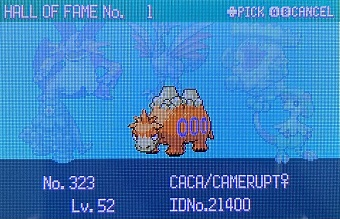I was not paying attention while doing the Instant Pomeg Glitch, which always turns the second member of your party into a Bad Egg. I forgot to replace CACA with a trash mon, and now she is lost to the void.
I was so in denial that I dreamt of her still being in my game's PC. I'm taking this as a sign to leave my pocket monsters alone for a while.
Did three rounds of the Battle Pyramid. Not much to say here because I think I'm already getting sick of the Emerald Battle Frontier. I'm gonna RNG manip/double corrupt a few pokemon in Emerald to send to Soul Silver and see if I like the Battle Frontier there better.
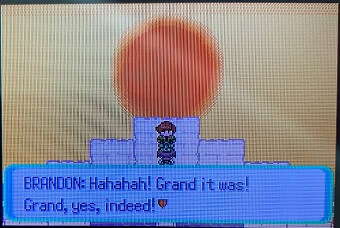I have generated the Exit Code Bootstrap for more complex ACE codes. This little guy saved me hours of EV training (because he lets me edit the EV substructure of a pkmn directly).
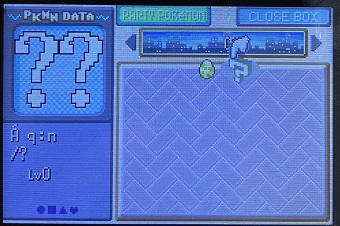I beat Emerald! More importantly, I used Glitzer Popping to enable Arbitrary Code Execution. Here is my pet Decamarks. Whenever I want to execute ACE I just look at him and he breaks reality for me.
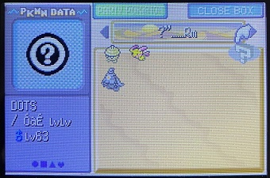Denise the Deino. If it was a boy it would be Dennis.
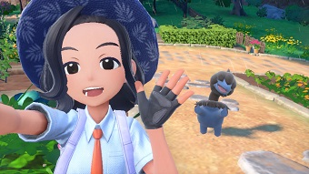 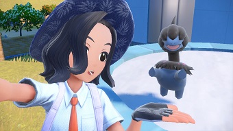My sibling started pronouncing Ghetsis as "gee-tiss" and I still haven't recovered.
One of my siblings and I were like "damn I miss the old generations" so we're replaying BW. I want to RNG manip my copy, but I need to be in the post-game for that, so I'm trying to speed through it. I named my character dipshit.
P.S. We have decided to ignore the canon pronunciation of Ghetsis and will continue calling him "get-sees".
It was my birthday! I didn't know there was a special mark you can only find for 'mons caught on your b-day, so it wasn't until I beat the game that I realized my Garganacl has the Mark of the Chosen One!
POV you thought all the Revives gotten from the Sinnoh Underground would automatically be added to your inventory ;-; I could have save scummed once I realized my mistake but doing it this way felt more ~dramatic~
The French copy of Platinum that I ordered has arrived! I've never played this one; all my nostalgia is for Pearl only, but I took 3.5 years of French in high school, and I've played Y version in French, so I was confident I could get through this. When I started up the cartridge to see what I'm working with, I was surprised to see that the previous owner saved just before challenging the Elite 4! Her name was Maylisa, she played as Dawn, and here is her team.
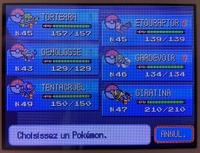It felt like a waste to erase a file that was so close to the end, so I traded her Pokemon over to SoulSilver and grinded a bit so they wouldn't get wiped. I have a lot of fondness for Gen IV but the difficulty curve for the E4 makes no sense... Why is the Champion's team 10+ levels higher than Aaron's? Anyway, I thought it was very cute that Maylisa chose the Idol trainer class to be her avatar!
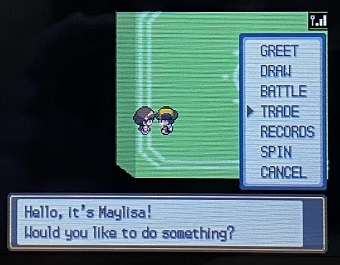The Tentacruel was her HM Friend, so when I was done training the other 5 'mons, I decided to let Maylisa borrow the shiny Lugia I had RNG'ed for. Here's everyone in the Hall of Fame.
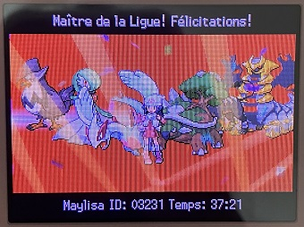After the credits I ran around Sinnoh for a bit with her team, traded them back to SoulSilver, and started my own file. I like to take her Giratina on walks in the Pokewalker; the idea of strolling in the park with Pokemon Satan is very silly to me.
The JPN box copies of HG/SS that I ordered arrived. I cannot speak a lick of Japanese, but I know these games like the back of my hand, and it was "only" around $120 for both (still higher than the original retail value, but it's a steal considering ENG boxed copies go for $100~ each). The Pokewalkers aren't region-locked, so I'm using one of them for my ENG copy of SoulSiver.
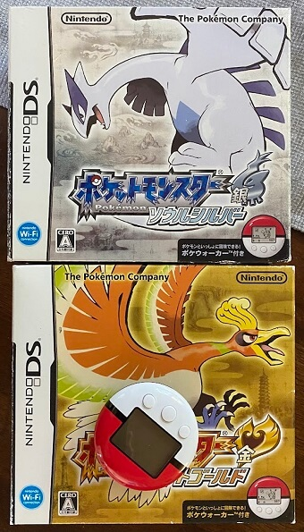My first ever Emerald RNG manipulation! This took an entire afternoon following this tutorial. I started from delay 0 and worked my way up, but my shiny frame ended up being on delay 9. In hindsight, if I had started at delay 10 and worked backwards, I could have gotten this 'kip in about 30 minutes.
Finally got to my childhood crush in PLA but I was beset by the weird yellow glow glitch... I was embarrassed he had to see me like this.
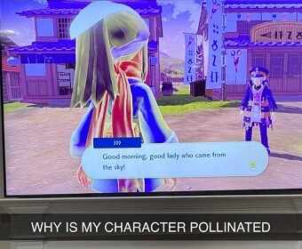